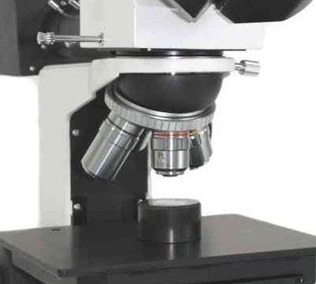

- Step 6: Microscopic analysis of specimen
-
Microscopic examination:
- Most standard microscopic checks of cast irons are done with a
magnification of 100x, which makes the graphite appear black.
- Higher magnifications are required to verify if the carbon is completely
retained, as well-polished graphite is grey.
Microscope

Watch the structure